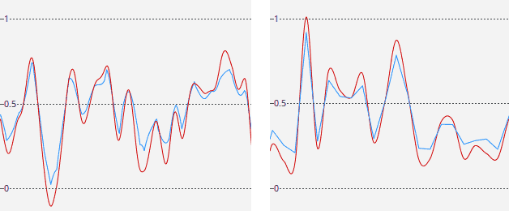
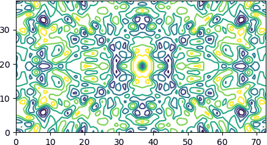

Grids and maps¶
Volumetric grid¶
Introduction¶
Macromolecular models are often accompanied by 3D data on an evenly spaced, rectangular grid (but note that the spacing in different directions may differ). The data may represent electron density, a mask of the protein area, or any other scalar data.
In Gemmi such data is stored in a class called Grid. Actually, it is a set of classes for storing different types of data: floating point numbers, integers or boolean masks.
Grid dimensions are given in variables nu, nv, nw. The data layout is Fortran-style contiguous, i.e. point (1,1,1) is followed by (2,1,1).
Grid classes also store:
unit cell dimensions (to know Cartesian coordinates of grid nodes),
and crystallographic symmetry (to know symmetry-equivalent grid nodes).
If the symmetry is not set (or is set to P1) we effectively have a box with periodic boundary conditions (PBC).
In C++, the gemmi/grid.hpp header defines
template<typename T=float> struct Grid;, which stores the dimensions
nu, nv, nw and the data vector. In Python, the corresponding classes are
FloatGrid (for maps) and Int8Grid (for masks).
To specify the grid size use set_size() or set_size_from_spacing().
They both check that the size is compatible with the space group, so it is
better to call them after setting Grid::spacegroup.
The latter function additionally ensures that the size is FFT-friendly.
The data points are accessed with get_value() and set_value().
In Python, the constructor may take grid dimensions or a NumPy array.
Alternatively, you may create an empty grid and set the size later on.
#include <gemmi/grid.hpp>
template<typename T=float> struct Grid;
int nu, nv, nw;
std::vector<T> data;
T Grid<T>::get_value(int u, int v, int w) const
void Grid<T>::set_value(int u, int v, int w, T x)
>>> import gemmi
>>> grid = gemmi.FloatGrid(12, 12, 12)
>>> grid.nu, grid.nv, grid.nw
(12, 12, 12)
>>> grid2 = gemmi.FloatGrid(numpy.zeros((30, 31, 32), dtype=numpy.float32))
>>> grid2.nu, grid2.nv, grid2.nw
(30, 31, 32)
>>> grid3 = gemmi.FloatGrid()
>>> # grid3.spacegroup = ...
>>> grid3.set_size(12, 12, 12)
If a unit cell is assigned to the grid (it will be discussed
later), you can request the size that gives approximately
the specified spacing, with one of the possible rounding modes: Nearest,
Up (denser grid) and Down:
>>> grid3.set_unit_cell(gemmi.UnitCell(40, 50, 40, 90, 82.5, 90))
>>> grid3.set_size_from_spacing(1.2, gemmi.GridSizeRounding.Nearest)
You can create a copy of a grid with:
>>> grid.clone()
<gemmi.FloatGrid(12, 12, 12)>
>>> grid.set_value(1, 1, 1, 7.0)
>>> grid.get_value(1, 1, 1)
7.0
>>> # we can test wrapping of indices (a.k.a. periodic boundary conditions)
>>> grid.get_value(-11, 13, 25)
7.0
The data can also be accessed as a NumPy array (Fortran-style contiguous),
without copying, through the array property:
>>> import numpy
>>> array = grid.array
>>> array.dtype
dtype('float32')
>>> array.shape
(12, 12, 12)
>>> numpy.argwhere(array == 7.0)
array([[1, 1, 1]])
Symmetry¶
The main advantage that Grid has over a generic 3D array is that it understands crystallographic symmetry. After setting the symmetry we can use a family of symmetrize functions that performs operations on symmetry-equivalent grid points. For example, we can set all equivalent points to the value calculated as a minimum, maximum or a sum of values of the equivalent points.
In C++ we directly set the spacegroup property:
const SpaceGroup* spacegroup;
Similarly in Python:
>>> grid.spacegroup = gemmi.find_spacegroup_by_name('P2')
Now let us use one of the symmetrizing functions:
>>> # the point (1, 1, 1) was already set to 7.0
>>> grid.set_value(0, 0, 0, 0.125) # a special position
>>> grid.sum() # for now only two points: 7.0 + 0.125
7.125
>>> grid.symmetrize_max() # applying symmetry
>>> grid.sum() # one point got duplicated, the other is on rotation axis
14.125
In C++ we have a templated function that can perform any operation on symmetry-equivalent points:
template<typename Func> void Grid::symmetrize(Func func)
Python bindings provide the following specializations:
>>> grid.symmetrize_min() # minimum of equivalent values
>>> grid.symmetrize_max() # maximum
>>> grid.symmetrize_abs_max() # max(|x|)
>>> grid.symmetrize_avg() # average
>>> grid2.symmetrize_sum() # sum (symmetry-equivalent nodes are added, multiplying nodes on special positions)
Unit cell¶
The unit cell parameters (in a member variable unit_cell: UnitCell)
enable conversion between coordinates and grid points.
The unit cell should be set using Grid<T>::set_unit_cell(),
which in addition to setting unit_cell sets also spacing,
the spacing between grid planes that is precalculated for efficiency.
>>> grid.set_unit_cell(gemmi.UnitCell(45, 45, 45, 90, 82.5, 90))
>>> grid.unit_cell
<gemmi.UnitCell(45, 45, 45, 90, 82.5, 90)>
>>> grid.spacing
(3.7179..., 3.75..., 3.7179...)
Each grid point (u, v, w) can now be expressed in fractional or Cartesian coordinates:
>>> grid.get_fractional(6, 6, 6)
<gemmi.Fractional(0.5, 0.5, 0.5)>
>>> grid.get_position(6, 6, 6)
<gemmi.Position(25.4368, 22.5, 22.3075)>
Grid point¶
Grid contains a little helper class (GridBase<T>::Point in C++) that bundles grid point coordinates (u, v, w: int) and a pointer to the value in grid (value). This bundle is obtained with getter:
>>> grid.get_point(0, 0, 0)
<gemmi.FloatGridBase.Point (0, 0, 0) -> 0.125>
>>> _.u, _.v, _.w, _.value
(0, 0, 0, 0.125)
or when iterating the grid:
>>> for point in grid:
... if point.value != 0.: print(point)
<gemmi.FloatGridBase.Point (0, 0, 0) -> 0.125>
<gemmi.FloatGridBase.Point (1, 1, 1) -> 7.0>
<gemmi.FloatGridBase.Point (11, 1, 11) -> 7.0>
The point can be converted to its index (position in the array):
>>> point = grid.get_point(6, 6, 6)
>>> grid.point_to_index(point)
942
to fractional coordinates:
>>> grid.point_to_fractional(point)
<gemmi.Fractional(0.5, 0.5, 0.5)>
and to orthogonal (Cartesian) coordinates in Angstroms:
>>> grid.point_to_position(point)
<gemmi.Position(25.4368, 22.5, 22.3075)>
The other way around, we can find the grid point nearest to a position:
>>> grid.get_nearest_point(_)
<gemmi.FloatGridBase.Point (6, 6, 6) -> 0.0>
Common operations¶
We have a helper function to copy the spacegroup and unit cell from a macromolecular structure (Structure):
>>> new_grid = gemmi.FloatGrid()
>>> st = gemmi.read_structure('../tests/1orc.pdb')
>>> new_grid.setup_from(st)
The Grid class is often used for electron density maps. A common operation on such maps is normalization – scaling that changes the mean to 0 and RMSD to 1:
>>> gr = grid.clone()
>>> gr.normalize()
To extract a block-shaped sub-array data as a Fortran-contiguous array, or to set data in a block in a grid, use functions get/set_subarray. Unlike array slicing, these functions are aware of the cell repeat (PBC) – the block area is not limited by the unit cell boundaries.
>>> sub = gr.get_subarray(start=[3,3,3], shape=[2,3,4])
>>> sub.shape
(2, 3, 4)
>>> gr.set_subarray(sub, start=[0,0,0])
To set the whole grid to the same value use:
>>> gr.fill(0)
To set the grid points in a certain radius from a specified position use:
void Grid<T>::set_points_around(const Position& ctr, double radius, T value, bool use_pbc=true)
>>> gr.set_points_around(gemmi.Position(25, 25, 25), radius=3, value=10)
>>> numpy.argwhere(gr.array == 10)
array([[6, 6, 7],
[6, 7, 7]])
This function, to be efficient, ignores symmetry. At the end we should call one of the symmetrizing functions:
>>> gr.symmetrize_max()
While we could use the above functions for masking the molecule (or bulk solvent) area, we have specialized functions to create a bulk solvent mask.
Interpolation¶
Interpolation is used to obtain a value corresponding to an arbitrary position. The most common interpolation methods are:
trilinear interpolation of the 8 nearest nodes,
tricubic interpolation that uses 64 nodes.
Cubic interpolation is smoother than linear but may amplify noise. This is illustrated in the plots below, which show density along two lines in a grid filled with random numbers from [0, 1). Trilinear interpolation is shown in blue, and tricubic – in red. The left plot shows density along a line in a random direction, while the right plot shows density along a line parallel to one of the axes.
{kind=link}

In the functions below, the choice of interpolation is specified
using the order argument:
order=0 – the nearest grid point value,
order=1 – trilinear interpolation (default),
order=3 – tricubic interpolation.
T Grid<T>::interpolate_value(const Fractional& fctr, int order=1) const
T Grid<T>::interpolate_value(const Position& ctr, int order=1) const
// You can also directly call the underlying functions
// trilinear_interpolation() and tricubic_interpolation().
// There is also a function that calculates derivatives:
std::array<double,4> Grid<T>::tricubic_interpolation_der(double x, double y, double z) const
>>> # trilinear interpolation
>>> grid.interpolate_value(gemmi.Fractional(1/24, 1/24, 1/24))
0.890625
>>> grid.interpolate_value(gemmi.Position(2, 3, 4))
2.0333263874053955
>>> # nearest value
>>> grid.interpolate_value(gemmi.Fractional(1/24, 1/24, 1/24), order=0)
7.0
>>> grid.interpolate_value(gemmi.Position(2, 3, 4), order=0)
0.0
>>> # tricubic interpolation
>>> grid.interpolate_value(gemmi.Fractional(1/24, 1/24, 1/24), order=3)
1.283477783203125
>>> grid.interpolate_value(gemmi.Position(2, 3, 4), order=3)
2.607566...
>>> # calculate value and derivatives in the directions of unit cell axes
>>> grid.tricubic_interpolation_der(gemmi.Fractional(1/24, 1/24, 1/24))
[1.283477783203125, 35.523193359375, 36.343505859375, 35.523193359375]
NumPy arrays
To interpolate the grid at positions listed as a NumPy array,
use interpolate_position_array(), which takes a NumPy array of positions
and returns a NumPy array of interpolated values:
>>> coords = numpy.array([[1, 2, 3], [2, 3, 4]], dtype=numpy.float32)
>>> grid.interpolate_position_array(coords)
array([0.4954875, 2.0333264], dtype=float32)
By default, it expects Cartesian coordinates and uses linear interpolation.
This can be changed by providing optional arguments to_frac: Transform
and order: int.
to_frac transforms input coordinates to fractional coordinates.
By default, it is a fractionalization matrix from the grid’s unit cell.
If your coordinates are already fractional, pass the identity matrix:
>>> frac = numpy.array([[1/24, 1/24, 1/24]])
>>> grid.interpolate_position_array(frac, to_frac=gemmi.Transform())
array([0.890625], dtype=float32)
If the positions of interest are on a regular 3D grid (which may not be aligned
with our grid) call interpolate_values() (with s at the end)
with two arguments: a 3D NumPy array (for storing the results)
and a Transform that relates the array’s indices
to positions (in Angstroms) in the grid:
>>> # first we create a numpy array of the same type as the grid
>>> arr = numpy.zeros([32, 32, 32], dtype=numpy.float32)
>>> # then we setup a transformation (array indices) -> (position [A]).
>>> tr = gemmi.Transform()
>>> tr.mat.fromlist([[0.1, 0, 0], [0, 0.1, 0], [0, 0, 0.1]])
>>> tr.vec.fromlist([1, 2, 3])
>>> # finally we calculate interpolated values
>>> grid.interpolate_values(arr, tr)
>>> arr[10, 10, 10] # -> corresponds to Position(2, 3, 4)
2.0333264
One Grid to another
For rescaling, rotating and translating maps, we have functions that use values from one Grid to set values in another Grid. Currently, the API is not ideal and should be revisited. Therefore, for now we leave them undocumented:
gemmi::interpolate_grid() gemmi::interpolate_grid_around_model()
Implementation note
Tricubic interpolation, as described on the Wikipedia page and in Appendix B of a PHENIX paper, can be implemented either as 21 cubic interpolations or using a method introduced by Lekien & Marsden in 2005, which involves 64x64 matrix of integral coefficients (see also this blog post). Gemmi uses the former method. It takes ~100 ns.
ASU and MaskedGrid¶
Sometimes we want to focus on a part of the grid only. For this, we have class MaskedGrid that contains vector marking masked positions and a reference to the original grid.
When an element of the mask is 0 (false), the corresponding element of the grid is unmasked and is to be used. This is the same convention as in NumPy MaskedArray.
The primary use for MaskedGrid is working with asymmetric unit (asu) only:
>>> asu = grid.masked_asu()
>>> asu
<gemmi.MaskedFloatGrid object at 0x...>
>>> asu.grid is grid
True
>>> asu.mask_array
array([[[0, 0, 0, ..., 1, 1, 1],
...
[1, 1, 1, ..., 1, 1, 1]]], dtype=int8)
>>> sum(point.value for point in asu)
7.125
>>> for point in asu:
... if point.value != 0: print(point)
<gemmi.FloatGridBase.Point (0, 0, 0) -> 0.125>
<gemmi.FloatGridBase.Point (1, 1, 1) -> 7.0>
Solvent mask¶
Gemmi implements a variant of the most popular method for calculating the bulk solvent area. This method was introduced in CNS. It uses van der Waals (or similar) atomic radii r and two parameters: rprobe and rshrink.
We mark the area in radius r + rprobe of each atom as non-solvent (0). r usually depends on the element, but some programs use the same radius for all atoms. The extra margin rprobe is largely cancelled in the next step.
We shrink the non-solvent area by rshrink. All the 0’s in a distance rshrink from 1’s are changed to 1, shrinking the solvent volume. Both rprobe and rshrink have the same order of magnitude. Jiang & Brünger (1994) proposed rprobe = 1.0 Å and rshrink = 1.1 Å.
The above procedure eliminates small solvent islands. If it is not sufficient, we can explicitly remove islands (contiguous areas of 1’s) up to a certain volume. This step was added for compatibility with Refmac.
Here is how to create a mask identical as phenix.mask:
>>> masker = gemmi.SolventMasker(gemmi.AtomicRadiiSet.Cctbx)
>>> st = gemmi.read_structure('../tests/1orc.pdb')
>>> grid = gemmi.Int8Grid()
>>> # take space group and unit cell from Structure,
>>> # and set size based on the specified minimal spacing
>>> grid.setup_from(st, spacing=0.6)
>>> masker.put_mask_on_int8_grid(grid, st[0])
The parameters of SolventMasker can be inspected and changed:
>>> masker.atomic_radii_set
AtomicRadiiSet.Cctbx
>>> masker.rprobe
1.1
>>> masker.rshrink
0.9
>>> masker.island_min_volume # 0 = unused
0.0
>>> masker.constant_r # 0 = unused
0.0
The example above uses a parameter set based on cctbx. We also have a few others sets. You can create mask similar to Refmac (but due to unintended features of solvent masking in Refmac, the results are not identical):
>>> masker = gemmi.SolventMasker(gemmi.AtomicRadiiSet.Refmac)
or a mask with Van der Waals radii from Wikipedia and rprobe = 1.0 Å and rshrink = 1.1 Å, as in the original Jiang & Brünger paper:
>>> masker = gemmi.SolventMasker(gemmi.AtomicRadiiSet.VanDerWaals)
or with constant radius, similarly to the NCSMASK program from CCP4:
>>> masker = gemmi.SolventMasker(gemmi.AtomicRadiiSet.Constant, 3.0)
If the mask is to be FFT-ed to structure factors, store it on FloatGrid
(function put_mask_on_float_grid in Python
and put_mask_on_grid in C++).
See the section about bulk solvent coorection
for details and examples.
Blob search¶
When we have an electron density map on a Grid we may want to check blobs – unmodelled electron density, potential ligand sites. Similarly to the “Unmodelled blobs” function in COOT, Gemmi has a function that finds such blobs. It was added to be used in CCP4 Dimple.
The blobs can be searched either in a difference map, or in a normal map with the model masked out. In this example we do the latter.
>>> # load map from MTZ
>>> mtz = gemmi.read_mtz_file('../tests/5wkd_phases.mtz.gz')
>>> grid = mtz.transform_f_phi_to_map('FWT', 'PHWT', sample_rate=3)
>>>
>>> # Load model. No real blobs in this tiny example,
>>> # so we remove water to get one water-sized blob.
>>> st = gemmi.read_structure('../tests/5wkd.pdb')
>>> st.remove_waters()
>>>
>>> # use SolventMasker to mask the models with zeros
>>> masker = gemmi.SolventMasker(gemmi.AtomicRadiiSet.Constant, 1.75)
>>> masker.set_to_zero(grid, st[0])
>>>
>>> # find the blob
>>> blobs = gemmi.find_blobs_by_flood_fill(grid, cutoff=0.6, min_volume=5,
... min_score=0, min_peak=0)
>>> blobs
[<gemmi.Blob object at 0x...>]
>>> blobs[0].volume
9.967250538023837
>>> blobs[0].score
10.18154...
>>> blobs[0].peak_value
1.848643...
>>> blobs[0].centroid
<gemmi.Position(12.5868, -0.45056, 0)>
>>> blobs[0].peak_pos
<gemmi.Position(12.307, 0, 0)>
In addition to the blob coordinates, it can be useful to know what is the nearest chain, residue and atom. Here is a quick recipe how to find it out with the help of NeighborSearch:
>>> pos = blobs[0].peak_pos
>>> ns = gemmi.NeighborSearch(st[0], st.cell, 8).populate(include_h=False)
>>> mark = ns.find_nearest_atom(pos)
>>> mark.to_cra(st[0])
<gemmi.CRA A/GLN 303/O>
>>> # To calculate distance from the atom, we need to account for the periodicity
>>> # of crystal. mark.pos is atom.pos transformed by a symmetry op, but we may need
>>> # to add a multiplicity of the unit cell vectors before calculating the distance.
>>> st.cell.find_nearest_pbc_image(pos, mark.pos, 0)
<gemmi.NearestImage 1_554 in distance 3.51>
>>> # You may also want to find a symmetry image of the blob that is near
>>> # the original molecule.
>>> atom_pos = mark.to_cra(st[0]).atom.pos
>>> st.cell.find_nearest_pbc_position(atom_pos, pos, mark.image_idx, inverse=True)
<gemmi.Position(12.8665, -2.3885, 0)>
>>> _.dist(atom_pos)
3.511341999194701
Flood fill¶
Flood fill is an algorithm that determines the area connected to a seed point, the area of all connected points which match a certain condition. Here, the criterion for grid points is having the value above (or, alternatively, below) a given threshold value.
The blob search from the previous section uses flood fill and returns Blob objects that contain a few statistics for each blob. To get a mask corresponding to a Blob we need to run the flood fill algorithm again, using peak_pos as the seed:
>>> seed = blobs[0].peak_pos
>>> mask = gemmi.flood_fill_above(grid, [seed], threshold=0.6)
>>> mask
<gemmi.Int8Grid(90, 8, 30)>
The second argument of flood_fill_above() is a list of positions used as seeds. We could use multiple seeds to obtain a single mask for all blobs together.
To find area with values below a certain value,
run flood_fill_above() with optional argument negate=True.
Here we print a few characteristics of the mask:
>>> mask.sum() # == number of masked points
62
>>> _ * grid.unit_cell.volume / grid.point_count # cf. blobs[0].volume
9.967250538023837
>>> extent = mask.get_nonzero_extent() # bounding box containing the blob
>>> extent.minimum # in fractional coordinates
<gemmi.Fractional(0.227778, -0.0625, -0.0833333)>
>>> grid.unit_cell.orthogonalize(extent.minimum)
<gemmi.Position(11.7177, -0.298563, -1.20317)>
>>> grid.unit_cell.orthogonalize(extent.maximum)
<gemmi.Position(13.4558, 4.47844, 1.20317)>
MRC/CCP4 maps¶
We support one file format for storing grid data on disk: MRC/CCP4 map. (This format is known as CCP4 in crystallography and MRC in cryoEM, here we’ll refer to it as the CCP4 format.) The map file is represented as a class that contains the Grid class and a format header.
The CCP4 format offers several modes for storing various data types. Gemmi supports:
mode 0 – which corresponds to the C++ type
int8_t,mode 1 – corresponds to
int16_t,mode 2 –
float,and mode 6 –
uint16_t.
CCP4 programs use mode 2 (float) for electron density and mode 0 (int8_t) for masks. A mask is 0/1 data that marks a part of the volume, such as the solvent region. Other modes are not used in crystallography but may be used for CryoEM data.
The CCP4 format is quite flexible. Data is stored as sections, rows, and columns that correspond to a permutation (defined in the file header) of the X, Y, Z axes. A file can cover any part of the unit cell or even multiple unit cells. Typically, a crystallographic map covers one of the following:
A molecule with a margin around it. This is necessary for programs that can’t use symmetry (e.g., PyMOL). Traditionally, such maps are created using the CCP4 utilities
fft+mapmask.An asymmetric unit (asu). Programs reading such maps should expand the symmetry. This approach was introduced in the CCP4 clipper library and is used by programs such as Coot. For most space groups, the map covers exactly one asu. However, for space groups where the asu in fractional coordinates is non-rectangular, some redundancy is unavoidable.
On average, the latter maps are significantly smaller, as compared in the UglyMol wiki.
Nowadays, the CCP4 format is less commonly used in crystallography, as nearly all programs calculate maps on the fly from map coefficients in reflection data (usually in MTZ format).
Reading¶
A ccp4 map can be read with:
#include <gemmi/ccp4.hpp>
Ccp4<float> map = read_ccp4_map(path, /*setup=*/false);
>>> m = gemmi.read_ccp4_map('../tests/5i55_tiny.ccp4', setup=False)
>>> m
<gemmi.Ccp4Map with grid 8x6x10 in SG #4>
The setup arg, if true, triggers additional setup that is usually performed
after reading a map – it will be described later on.
Similarly, a mask (mode 0 map) can be read with read_ccp4_mask(),
which takes the same arguments as read_ccp4_map()
and returns Ccp4<int8_t> in C++ and Ccp4Mask in Python.
A mask typically contains only values 0 and 1,
but in principle, values can range from -127 to 128.
Gemmi loads all data into memory. Large tomography files may not fit into memory and would require a different approach, but our focus is on convenient working with files that can be kept in memory. Regardless of size, you can always read the format’s header with:
Ccp4Base map_header = read_ccp4_header(path);
>>> gemmi.read_ccp4_header('../tests/5i55_tiny.ccp4')
<gemmi.Ccp4Base object at 0x...>
You can read a file in any supported mode with read_ccp4_map(),
but this converts file data to the 32-bit float type.
In C++, Ccp4<> can be templated with any type,
allowing native storage of data from modes 1 (int16_t) and 6 (uint16_t).
The function gemmi::read_ccp4_file(path, false) can be replaced by:
gemmi::Ccp4<float> map;
map.read_ccp4_file(path);
and instead of float you can use int8_t, int16_t, or uint16_t
(in principle, it can be any type, but other types probably won’t be useful).
Ccp4<T> stores data in the Grid<T> grid member.
When the grid type does not match the file data type, the library
converts the data (static_cast) upon reading.
Header¶
The CCP4 map header is organised as 56 words (4-bytes that are interpreted as integer, float or 4 characters) followed by 800 bytes – a space for ten 80-character text labels.
Low-level access to the header is provided by getters and setters that use the word number (as in the format description from ccp4 or ccp-em) as the first argument.
int32_t header_i32(int w) const;
float header_float(int w) const;
// ccp4 map header has mostly 80-byte strings
std::string header_str(int w, size_t len=80) const;
void set_header_i32(int w, int32_t value);
void set_header_float(int w, float value);
void set_header_str(int w, const std::string& str);
For example:
int mode = map.header_i32(4);
float x = map.header_float(11);
>>> m.header_float(20), m.header_float(21) # dmin, dmax
(-0.5310382843017578, 2.3988280296325684)
>>> m.header_i32(28)
0
>>> m.set_header_i32(28, 20140)
>>> m.header_str(57, 80).strip()
'Created by MAPMAN V. 080625/7.8.5 at Wed Jan 3 12:57:38 2018 for A. Nonymous'
When the file is read, the header is used to set properties of the grid:
>>> m.grid # tiny grid as it is a toy example
<gemmi.FloatGrid(8, 6, 10)>
>>> m.grid.spacegroup
<gemmi.SpaceGroup("P 1 21 1")>
>>> m.grid.unit_cell
<gemmi.UnitCell(29.45, 10.5, 29.7, 90, 111.975, 90)>
setup()¶
read_ccp4_map() and read_ccp4_mask() read the data from file
into a Grid class, by default keeping the same axis order and the same
dimensions as in the file.
But the functions that operate on the grid data (such as get_position(),
interpolate_value(), symmetrize()) expect that the grid covers
the whole unit cell and that the axes are in the X,Y,Z order.
So before calling a function that uses either the symmetry or the unit
cell parameters we need to setup the grid as required.
You do this either by calling the reading function with the optional
argument setup=True, or by calling the setup() method afterwards.
The setup function has two arguments. The first one is a value to be used for unknown values. It is used only when the input file does not cover a complete asymmetric unit. (If you used CCP4 program MAPMASK – it is keyword PAD there). When you call a read function with setup=True, this argument is NaN for maps and -1 for masks.
The second argument (mode) is optional and can be used to perform a partial setup.
MapSetup.Full – (default value) reorders and resizes the grid to cover the whole unit cell, applying symmetry.
MapSetup.NoSymmetry – does not use symmetry operations, only cell repeat (periodic boundary conditions, PBC) when extending the map.
MapSetup.ReorderOnly – only reorders axes to X, Y, Z.
map.setup(NAN);
>>> m.setup(float('nan'))
>>> # the grid dimensions were 8x6x10, now they are:
>>> m.grid
<gemmi.FloatGrid(60, 24, 60)>
Non-default modes are only for special occasions. For example, if we had a suspicious file and wanted to check if the map values obey the symmetry specified in the file, we could do this:
>>> m = gemmi.read_ccp4_map('../tests/5i55_tiny.ccp4')
>>> m.setup(float('nan'), mode=gemmi.MapSetup.NoSymmetry)
>>> grid_copy = m.grid.clone()
>>> # use two grids to store min and max values of symmetry mates
>>> m.grid.symmetrize_min()
>>> grid_copy.symmetrize_max()
>>> # find the biggest difference between symmetry-related points
>>> numpy.nanmax(grid_copy.array - m.grid.array)
0.0
Writing¶
To write a map to a file, update the header if necessary,
(optionally) set the extent of the map to be written,
and call write_ccp4_map().
map.update_ccp4_header();
// map.set_extent(...);
map.write_ccp4_map(filename);
>>> m.update_ccp4_header()
>>> # m.set_extent(...)
>>> m.write_ccp4_map('out.ccp4')
update_ccp4_header() does the following:
if the map header is empty (a new map was created): it prepares the header,
if the optional argument
modeis given and differs from the current mode: the mode is changed and the data type will be converted while writing the file; the mode can be 0, 1, 2, 6, or -1 (default – no action),if the optional argument
update_statsis true (the default is true): DMIN, DMAX, DMEAN and RMS in the map header are re-calculated.
If the mode has not been changed (i.e. it matches the data type),
write_ccp4_map() simply writes ccp4_header and grid data as they are.
If instead of writing a map file you’d like to store it in a memory buffer,
just copy the memory areas of the underlying C++ vectors.
In Python, you can do:
>>> map_bytes = m.ccp4_header + m.grid.array.tobytes(order='A')
By default, the written map covers the whole unit cell.
To change this, call set_extent() before writing the map.
As an example, let us cover a molecule with 5Å margin
(equivalent of running CCP4 program MAPMASK with XYZIN and BORDER 5).
map.set_extent(calculate_fractional_box(structure, 5));
>>> st = gemmi.read_structure('../tests/5i55.cif')
>>> m.set_extent(st.calculate_fractional_box(margin=5))
>>> m.write_ccp4_map('out.ccp4')
After calling set_extent() we have the same situation as before calling
setup() – some grid functions may not work correctly.
Here we show three other scenarios of setting the map extent.
You may want to preserve the original map extent, which can be
read by calling get_extent() before the setup:
>>> m = gemmi.read_ccp4_map('../tests/5i55_tiny.ccp4')
>>> box = m.get_extent()
>>> m.setup(float('nan'))
>>> # ... here the map gets modified ...
>>> m.set_extent(box)
>>> m.write_ccp4_map('out.ccp4')
Alternatively, you may want to write only an asymmetric unit (actually, asu brick) of the map, which is enough to calculate the density everywhere. For this, use the brick extent:
>>> brick = gemmi.find_asu_brick(m.grid.spacegroup)
>>> brick.str()
'0<=x<=1/2; 0<=y<1; 0<=z<1'
>>> box = brick.get_extent()
At last, if the map would be padded with zeros or NaNs you could determine
the box that contains real data with get_nonzero_extent():
>>> m = gemmi.read_ccp4_map('../tests/5i55_tiny.ccp4')
>>> m.setup(0., gemmi.MapSetup.NoSymmetry)
>>> m.grid.get_nonzero_extent()
<gemmi.FractionalBox object at 0x...>
Map from Grid¶
To write grid data as a CCP4 file, create a new Ccp4 object,
assign the grid, call update_ccp4_header(), and write the file.
>>> ccp4 = gemmi.Ccp4Map()
>>> ccp4.grid = gemmi.FloatGrid(numpy.zeros((10, 10, 10), dtype=numpy.float32))
>>> ccp4.grid.unit_cell.set(20, 20, 20, 90, 90, 90)
>>> ccp4.grid.spacegroup = gemmi.SpaceGroup('P1')
>>> ccp4.update_ccp4_header()
>>> ccp4.write_ccp4_map('out.ccp4')
Maps are often calculated from map coefficients – example in section about FFT shows how to calculate such a map and write it to a file.
DSN6/BRIX maps¶
Gemmi can also read density maps in the DSN6/BRIX format.
Unlike read_ccp4_map(), which returns a Ccp4 wrapper with access to the
file header, read_dsn6_map() returns the grid itself
(Grid<float> in C++, FloatGrid in Python).
The returned grid has unit-cell and sampling information taken from the file,
so it can be used with the same grid methods as a map read from CCP4.
#include <gemmi/dsn6.hpp>
gemmi::Grid<float> grid = gemmi::read_dsn6_map(path);
grid = gemmi.read_dsn6_map(path)
Isosurface extraction¶
Gemmi provides marching-cubes isosurface extraction for 3D grids. This is useful for turning a map into a triangle mesh for visualization, for example for displaying electron density around a site of interest.
The function extract_isosurface() takes a grid, a center point in Cartesian
coordinates, a radius in Angstroms, an isolevel, and an optional method.
It returns an IsoSurface object containing two flat arrays:
vertices with x, y, z triples and triangles with vertex-index triples.
It works with any Grid, including data read from CCP4 or DSN6/BRIX maps.
Two methods are available through the IsoMethod enum:
MarchingCubes– standard marching cubes (default),SnappedMC– vertices close to grid nodes are snapped to them.
#include <gemmi/isosurface.hpp>
gemmi::Position center(10.0, 20.0, 30.0);
gemmi::IsoSurface iso = gemmi::extract_isosurface(grid, center,
/*radius=*/8.0,
/*isolevel=*/1.5);
// iso.vertices: flat vector of floats (x1,y1,z1, x2,y2,z2, ...)
// iso.triangles: flat vector of triangle vertex indices
center = gemmi.Position(10, 20, 30)
iso = gemmi.extract_isosurface(grid, center, radius=8.0, isolevel=1.5)
# iso.vertices: list of floats [x1,y1,z1, x2,y2,z2, ...]
# iso.triangles: list of ints [i1,i2,i3, ...]
# iso.vertex_count: number of vertices (len(vertices) / 3)
# iso.triangle_count: number of triangles (len(triangles) / 3)
Examples¶
mapslicer¶
A short code that draws a contour plot similar to mapslicer plots (see Fig. 3 in this CCP4 paper if you wonder what is mapslicer). To keep the example short we assume that the lattice vectors are orthogonal.
import numpy
from matplotlib import pyplot
import gemmi
# toxd_aupatt.map is generated by $CCP4/examples/unix/runnable/patterson
ccp4 = gemmi.read_ccp4_map('/tmp/wojdyr/toxd_aupatt.map', setup=True)
arr = ccp4.grid.array
x = numpy.linspace(0, ccp4.grid.unit_cell.a, num=arr.shape[0], endpoint=False)
y = numpy.linspace(0, ccp4.grid.unit_cell.b, num=arr.shape[1], endpoint=False)
X, Y = numpy.meshgrid(x, y, indexing='ij')
pyplot.contour(X, Y, arr[:,:,40])
pyplot.gca().set_aspect('equal', adjustable='box')
pyplot.show()
{kind=link}

maskdiff¶
A tiny utility that compares two masks (maps with 0/1 values) of the same size, printing a summary of matches and mismatches:
$ python examples/maskdiff.py old_mask.ccp4 new_mask.ccp4
Size: 240 x 300 x 270 and 240 x 300 x 270
0-0 5006818 25.76%
1-1 13496058 69.42%
0-1 937124 4.82%
1-0 0 0.00%
total 19440000
Here is the script:
import sys
import numpy
import gemmi
def maskdiff(path1, path2):
mask1 = gemmi.read_ccp4_mask(path1, setup=True)
arr1 = mask1.grid.array
mask2 = gemmi.read_ccp4_mask(path2, setup=True)
arr2 = mask2.grid.array
print("Size: %d x %d x %d and %d x %d x %d" % (arr1.shape + arr2.shape))
if arr1.shape != arr2.shape:
sys.exit("Different sizes. Exiting.")
t = 2 * (arr1 != 0) + (arr2 != 0)
for (a, b) in [(0, 0), (1, 1), (0, 1), (1, 0)]:
n = numpy.count_nonzero(t == 2*a+b)
print('%d-%d %12d %6.2f%%' % (a, b, n, 100.*n/arr1.size))
print('total %10d' % arr1.size)
if __name__ == '__main__':
if len(sys.argv) != 3:
sys.exit("Usage: maskdiff.py map1 map2")
maskdiff(sys.argv[1], sys.argv[2])
Q-Q difference¶
A script that generates a Q-Q difference plot, as described in the 2012 paper by Ian Tickle, in section 5.2. This script aims to reproduce the QQDOUT output from EDSTATS.
As in the paper, we first downsample the data to have statistically
independent points, and then we plot Z–⟨Z⟩ on the y axis.
To create a conventional Q-Q plot, with Z on the y axis,
you can use statsmodels.api.qqplot(map_values).
import sys
import gemmi
import numpy as np
import statsmodels.api as sm
# Usage example: qq.py path/to/df.map 1.5 >plot.dat
assert len(sys.argv) == 3
df_map_path = sys.argv[1]
d_min = float(sys.argv[2])
# read map
df = gemmi.read_ccp4_map(df_map_path, setup=True)
grid = df.grid
# get 1D array of grid points corresponding to a single ASU
map_values = grid.array[grid.masked_asu().mask_array == 0]
# resample data to get as many points as we'd have at the Shannon limit
current_voxel_vol = grid.unit_cell.volume / grid.point_count
shannon_voxel_vol = (d_min / 2)**3
npoints = int(round(current_voxel_vol / shannon_voxel_vol * len(map_values)))
# get quantiles
map_values.sort()
quantile_levels = np.linspace(0, 1, npoints)
data = np.quantile(map_values, quantile_levels)
# print data for the plot
pplot = sm.ProbPlot(data, fit=True)
for x in zip(pplot.theoretical_quantiles,
pplot.sample_quantiles - pplot.theoretical_quantiles):
print('%g %g' % x)
To reproduce the plot from EDSTATS exactly,
use EDSTATS’s rescaled difference map (MAPOUT2) as the input,
and call ProbPlot with fit=False.
The density values in MAPOUT2 are normalized separately for each chain.